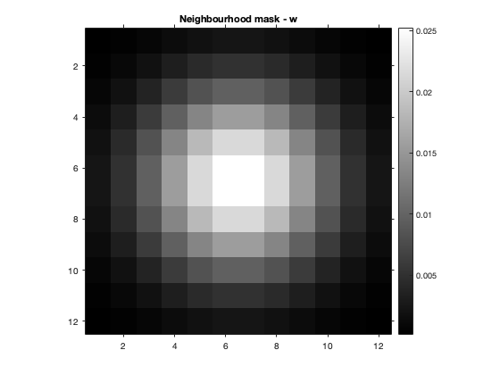

Contents
Visualizing the data
data = load('../data/assignmentSegmentBrain.mat'); im = data.imageData; mask = data.imageMask; printImage(im.*mask,'Masked corrupted image - y');
Hyperparameters
q = 1.65; fprintf('q = %f\n',q); nb_size = 12; nb_sigma = 2.5; w = fspecial('gaussian', nb_size, nb_sigma); printImage(w,'Neighbourhood mask - w'); K = 3; eps = 1e-7;
q = 1.650000
Initialisation
y = im(mask==1); y_uniq = unique(y); c_idx = randperm(length(y_uniq),K); c = reshape(y_uniq(c_idx),1,K); [c,~] = kmeansClustering(y,c,eps); c = reshape(c,1,1,K); y = im.*mask; [~,mu] = min(((y-c).^2).*mask,[],3); mu = mu.*mask; for i=1:K printImage(mu==i, sprintf('Initial Memberships for class %d',i)); end fprintf('Initial Means = %f %f %f\n',c); b = 0.5*ones(size(y)).*mask;
Initial Means = 0.634178 0.224338 0.453188

This initialization is given by kmeans clustering on masked image. Motivation for this is that kmeans is a natural and efficient algorithm for image segmentation. This gives binary initial memberships for FCM and sufficiently far apart initial means (but which are close to optimal means).
Modified FCM
[c,mu,b,history] = modifiedFCM(y,w,q,c,b,eps,mask); figure; plot(history); xlabel('Iterations'); ylabel('Objective function value'); title('Value of objective function vs num. of iterations'); printImage(im, 'Corrupted image provided'); printImage(im.*mask, 'Masked corrupted image'); printImage(mu, sprintf('Optimal Class Memberships')); for i=1:K printImage(mu(:,:,i), sprintf('Optimal Memberships for class %d',i)); end printImage(b, 'Optimal bias-field image estimate'); im_br = sum(mu.*c, 3); printImage(im_br, 'Bias-removed image'); residual = y - im_br.*b; printImage(residual, 'Residual image'); fprintf('Optimal estimates of class means = %f %f %f\n',c);
Value of objective function = 647.379639 Value of objective function = 87.584045 Value of objective function = 68.304504 Value of objective function = 62.368958 Value of objective function = 60.119644 Value of objective function = 59.229759 Value of objective function = 58.851044 Value of objective function = 58.670341 Value of objective function = 58.573563 Value of objective function = 58.519741 Value of objective function = 58.488182 Value of objective function = 58.467964 Value of objective function = 58.454315 Value of objective function = 58.445568 Value of objective function = 58.439789 Value of objective function = 58.435860 Value of objective function = 58.433308 Value of objective function = 58.430939 Value of objective function = 58.429295 Value of objective function = 58.427910 Value of objective function = 58.426666 Value of objective function = 58.425373 Value of objective function = 58.424374 Value of objective function = 58.423367 Value of objective function = 58.422497 Value of objective function = 58.421669 Value of objective function = 58.421284 Value of objective function = 58.420601 Value of objective function = 58.420013 Value of objective function = 58.419350 Value of objective function = 58.418907 Value of objective function = 58.418667 Optimal estimates of class means = 1.063740 0.485727 0.879569